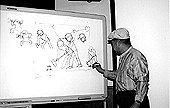

98.5.1（金）
・7時からイマジカにて、ボードを撮ったテスト試写を行う。奥井さんとイマジカの間で何度もテストを繰り返し、最善のフィルムを使ってプリントしたにも関わらず、なかなか納得のいく色が出ていない。取り合えず、美術の二人が再度ボードを描き、出る色、出ない色を明確にするテストをもう一度することに。
・イマジカの帰りに、高橋さんにお金を出してもらって、みんなで食事をすることになる。実は試写を見る前にバーガーキングを食べてしまった者が約4名いて「まあお茶でも」とついて行ったのだが、入ったのがよりによってトンカツ屋。お茶だけというわけにもいかず、4人とも無理やりトンカツを詰め込んでいた。
98.5.2（土）
・一昨日上がった○○○○ー篇の改定絵コンテを、旧版の絵コンテと混同しないよう、回収しながら配布。
98.5.6（水）
・「となりの山田くん」のタイトルロゴを取りに、品川にある真野薫氏の事務所へおじゃまする。
・鈴木プロデューサーがアメリカ出張中。8日から出社の予定。
・田辺氏が、原画を手伝ってくれる○○氏と打ち合わせ。地方に住んでいるため、ジブリ史上初の電話打ちだ。
・5月14日に久しぶりのジブリフォーラムが開催されることになる。講演者はあの大塚康生氏。具体的なエピソードを通して「僕はこんなふうに作画の仕事をしてきた」を語っていただく予定。
98.5.7（木）
・絵コンテ、シーン1-61 9CUT 41秒分アップ。
・メインスタッフコーナーに、あまりCUTを置く棚が無いのでデスク神村氏が、田辺、高畑両氏の机の後ろにカラーボックスを置く。早速神村氏はここぞとばかり「どんどんCUTを上げて、ここに入れてください」と田辺さんに催促をしている。
・外で原画を手伝ってもらうスタッフ用に大きめのライトボックスを購入。すぐに宅急便で発送。
98.5.8（金）
・原画テストが行われる。課題は、「となりの山田くん」の中の1CUTを原画として仕上げるもの。問題自体は予め先週末に公表され、今日はその第一回の清書の日。参加したのは11名。多くの人が制限時間の12時近くまで必死に課題に取り組んでいた。上がってきた原画をちらりと見た田辺氏は「一つのコンテからでもいろんな動き、解釈が生まれるものですね」と感心していた。明日この原画をQARに取り込み、各自が自分の動きを吟味し、手直しをして、月曜日が最終締切日となる。
98.5.9（土）
・来年夏の映画公開を控え、秋に社員旅行は無理であろう、ということで今年は早めに社員旅行の企画委員会が行われる。委員は、米沢、洞口、田村、野口、井関、泉津井、浅野、長田、斎藤（制作）、安田、古城、田中千義の12名。まず各部署の代表が自分の部署の意見を取りまとめ、発表した後、候補地を決めるため、何度かの投票と議論が行われる。最初のうちは、北海道と沖縄、佐渡が推薦者が多く、これら三カ所から決定するかと思われたが、その後浅野氏が、四国を強烈にプッシュ。最終的に四国対北海道の決戦投票となり、7対5の僅差で四国が旅行先に決定した。
・夜、30男が近くの飲み屋に集まり、高橋望氏の歓迎会兼、マイナー○○○○○開催の前祝いを行う。
98.5.11（月）
・シナリオ兼仮アフレコ（プレスコ？）台本のコピーをメインスタッフに配布。
・社員旅行の行き先が社内で発表となったが、「何故四国なのか」と北海道や沖縄希望者から苦情がでるも、東小金井近辺の本屋から四国の旅行ガイドが消え失せている。
・本日原画テストの最終締切日。
98.5.12（火）
・昨日提出された原画テストの結果を斎藤君がQARに入れる。それをもとに2時からメインスタッフ等による選考が行われる。QARの結果や他作品での評価をもとに、一名の原画昇格が決定。
・プレスコ用映像資料として、QARからビデオへCUT順に並べ替える作業に取りかかる。取り合えず第1段階として、現状でどのCUTが、どの段階でQARに取り込まれているのかをチェックし（一応全CUTがQARに取り込まれることにはなっている）、その後の作業量がどのくらいになるのかを推定しなければならない。なにせMOに収められているCUTを呼びだし、並べ替える作業は機械の性能上けっこう時間がかかってしまうものなのだ。
98.5.13（水）
・最近ジブリでは「ブレンパワード」があちこちで話題になっている。20台後半から、ジブリの中心世代であり、ガンダム世代の30半ば男まで、「何だかよく分からんが、なんとなく面白くなってきている」という中途半端な感想が多いのだが、みんな妙に真剣に見ている。それにしてもコピーの「頼まれなくたって生きてやる」には一寸複雑。
98.5.14（木）
・絵コンテ、シーン5-64 9CUT 33.5秒アップ。
・山森、大谷、二木三氏の作打ちが行われる。
・夜7時より、一階バーにてジブリフォーラム「大塚康生講演会」が開かれる。バーには外部からの参加者を含め超満員の大盛況。自らの歴史をたどりながら、どのような訓練を積んで（一級の）アニメーターになったのか、また、ある研修の記録をビデオで見ながらみんなで切磋琢磨することが如何に大切であるか、を講演していただいた。もう67という年齢にも関わらず、立ちっぱなしで約2時間半にも及ぶ大講演となる。ところで大塚さんはジブリに例のオリーブドラブのモトラで来社。さすが。

98.5.15（金）
・近畿日本ツーリスト、佐々木氏来社。米沢氏と社員旅行の打ち合わせ。
・先日の原画テスト次点ということで、田村、米林コンビに外の原画を描かせることに。二人にその説明をする。
・深夜、一村教授がインターネットでローランド・エメリッヒ版ゴ○ラの、おもちゃの画像を発見、早速プリントアウトしてみんなに見せる。見た人全員が、日本版とのあまりの変わりように絶句。果たして映画の出来は…。
98.5.16（土）
・完成したシナリオに従って、シーン、CUT番号を全て付け直すことに。上がった絵コンテやCUT袋にはシールで新しい番号を、CUT表は始めから付け直すことになる。おかげで制作部はてんやわんや。
98.5.18（月）
・本格的に動画作業が始まって数週間が過ぎたが、やはり実際取りかかってみると、今までと感じが違うためか、ちょこちょこ問題が出てきている。
・昼食後に一杯になった燃えないゴミの袋を取り替えようとしたら、洗ってもいない容器がいくつも入っているのが目についた。たしか前回の職場委員会の時に、米沢氏から注意の言葉が出たと思うのだが、こんな簡単なことも実行できないのだろうか。汁でべとべとになり、匂いを発したゴミを処理する人達のことを想像できないのだろうか。ゴミ問題ってけっこう洒落にならないところまで追い詰められていると思うのだが。
98.5.19（火）
・参考資料として某ペンギンアニメのビデオを新宿ツタヤ（近隣のビデオ屋では何処にも置いていなかった）で借りてくる。帰社後メインスタッフで見るがあまり参考にならず。
・第二会議室にて、百瀬さんが担当しているボブスレー篇の原画マンを誰にするかの話し合いが持たれる。すぐにでも一人に、原画作業に入ってもらうことに。
・鈴木プロデューサーが、二種類の「となりの山田君」ポスター案を手に持って制作部やメインスタッフコーナーをうろうろ。「いいでしょう」と高畑監督以下、いろんな人に声をかけていた。
・「『のなかくん』と声をかけても答えてくれる人がいなかったから寂しかったんだよね……」「久々に胃が痛いんだよ。のなかくん、俺のコーヒーに何か入れたんじゃない？」野中さんが久々に会社に出てきた（と言っても1日半ぶりだが）のがよほど嬉しかったのか、鈴木プロデューサーが野中さんに声をかけまくっていた。
98.5.20（水）
・「となりの山田君」ではラフ原画を原画の前に一度提出してもらっているのだが、ラフ原画を出来がよかった場合そのまま原画にしてしまう事があり、作業の流れ上、そのまま気付かずに作監に流れてしまっているものがあることが発覚する。伊藤、小西氏らと解決策を話し合った結果、とにかく何か一寸でも通常と違う流れが生じた場合は、必ず演助の伊藤君に一回渡すこと、という結論に。
98.5.21（木）
・某スタッフが、東小金井近辺に部屋を借りたいということなので、一緒に不動産屋まわり。意外に安い値段で良い物件が多い。と言いつつも、今時珍しい「和室で風呂が広め」という条件がネックになってなかなか決まらず。
・一村教授が10日程前に、その存在を知り、寝ても覚めても頭から離れなかった、舟和の「平目コース」（平目一匹を使って、刺身、寿司、吸い物が出てくる）を、高橋、望月さん等と食する。味もなかなか、値段も手ごろと大満足だったが、グルメ一村教授だけは「まだまだ」と合格点を付けていなかった。
・絵コンテ、シーン9-1 8CUT分アップ。早速そのシーンで安藤氏の打ち合わせ。
98.5.22（金）
・朝から再び某氏と不動産屋廻り。何軒かを回ってみるも良い物件は見つからず。結局、昨日最後に見た物件で契約。ところで契約時に管理事務所の人と電話で話をしたのだが、ぜひ入居する人を一度見てみたいという。理由は「アニメーション制作といえば所謂芸能人ですから、芸能人は金髪にしたり、鼻輪をしたりしている人が多いと聞きます。そういう人はお断りしているので、それを確かめたい」とのこと。げ、芸能人、しかも鼻輪…。
98.5.23（土）
・職場委員会が行われる。議題は「もののけ姫」のビデオ、「となりの山田君」の進行状況等の報告。
・百瀬さんが担当するボブスレー篇の進行報告会議が行われる。
・現在原画を描くにあたって、原画マンは中割も全て作画（参考も含め）をする方式を取っているが、さすがにスケジュール上これではまずくなってきたので、メインスタッフの間で、会議。いくつかの案が提案される。
98.5.26（火）
・ボブスレー編の作打ちが、行われる。原画は、吉田さんで範囲は2-2-13から2-2-30まで。
・高橋さんの案で「平成狸合戦ぽんぽこ」の進行状況と、「となりの山田君」の進行状況を、比較する表を作成。
・某氏が制作期間中借りることになったマンション、今日から入れるはずが、肝心のガス栓が開いていないことが発覚、風呂に執着していた某氏は入居を断念。「水風呂なら入れるんですね」と某氏。
98.5.27（水）
・「動画注意事項」がようやく完成。が、余りに細かく説明している為、一回読んだだけでは、解読不能との評判。
・動画注意事項が難しく、細かいニュアンスが伝わるか不安だったので、通訳兼鈴木プロデューサー秘書の井筒さんを交えて、ダビットとアレックスの動画説明会が行われる。
・動画INに先駆け、動画に「動画の説明をする会」を土曜日に行うことが決定。
・デジタル編集機アビッドが導入される。
98.5.28（木）
・声入れ用映像資料として、1週間ほどかけて、今までに上がった動画、原画を、QARとマック版急速演技記録計(仮名)からビデオに落としていた作業がようやく終了し、CUT順に編集。
98.5.29（金）
・デジタル編集機アビッドはQARが置いてあるスペースに搬入されたが、今日から配線や調節の為に何人もの人たちが出入りしているため、QARに絵を入れる人達やら、チェックする高畑さんやらも加わり、異常な人口密度となっている。
・井筒さん用にパワーブックG3が一台導入され、早速見学に行ったが、そのあまりの巨大さに絶句。
98.5.30（土）
・芳尾氏打ち合わせ。シーン 2-2 1～12まで。
・今日の読売新聞夕刊に宮崎監督の一寸したインタヴューが載ったのだが、そこに「東小金井村塾2」の募集の件が掲載され、連絡先にジブリ制作業務部の番号が書いてあった。その為、夕方から業務部の電話が鳴りっぱなしになる。今日までで既に200通以上の応募が来ているのだが、果たして締め切り（新聞掲載の影響で6月14日に延びた）までに何通の応募があるのか。
| 次のページへ |
| 日誌索引へ戻る |